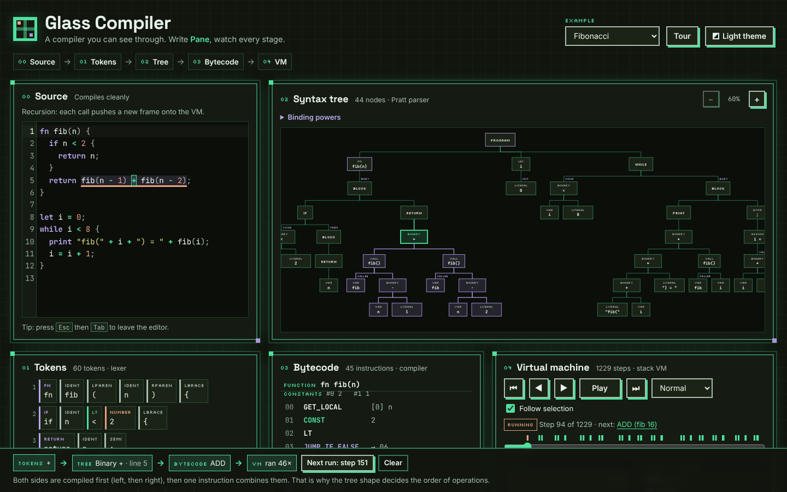

01 · Live
Glass Compiler
A compiler you can see through. Write a few lines of Pane, a tiny language made for looking at, and watch every stage of a real compiler work on it: the tokens, the syntax tree, the bytecode, and a virtual machine stepping through it with its stack and variables on show.

01 What you can do
- Edit and watch. Every stage updates as you type, and mistakes are explained with the line and column.
- Click anything. A token, a tree node, an instruction or a line of output: everything it is linked to lights up.
- Step the machine. Forwards, backwards, play or scrub, with the stack, frames, locals and globals at every step.
- See why precedence works. The binding powers the Pratt parser uses are on show in the tree panel.
- See it as WebAssembly. A fifth stage shows the same program as a real WebAssembly module, checked against your browser's own engine.
- Share a program. The link carries your code after the
#, so it never passes through a server.
02 How it's graded
Recorded from the test run by scripts/record-results.mjs, never typed in by hand.
A Playwright suite also drives the page in a real browser at phone and desktop widths, in both themes, with axe accessibility checks.
03 The first link in the pipeline
Every program also compiles to a real .wasm module. Glass Compiler runs it on your browser's own
WebAssembly engine to check it prints exactly what the VM prints. Open in Glass Wasm steps
through it there, with every instruction linked back to your Pane code.